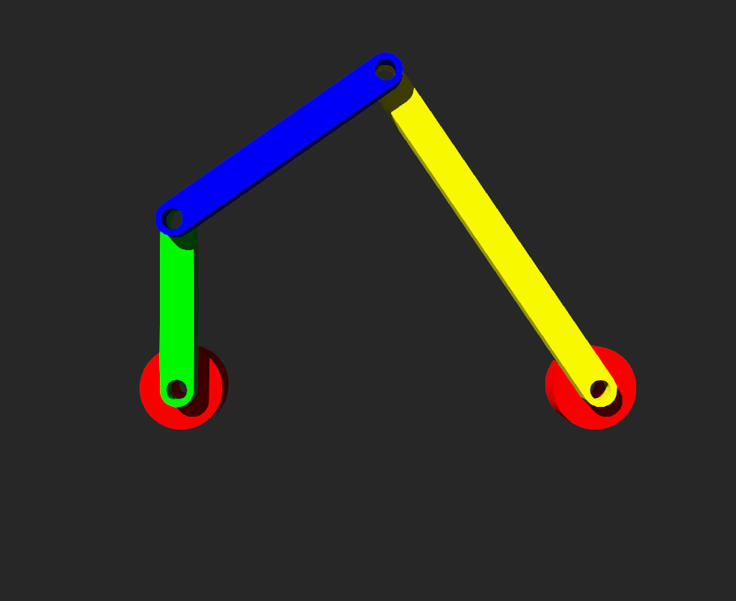

Summary <<
Previous Next >> Closing
Tasks
截至目前已知:
1. 最新的可攜程式系統與套件版本:
portable_wcm2025_w10.7z
2. 已知如何自行建立各種版本的 Python 可攜系統:
https://mde.tw/cd2025/content/Portable.html
3. 已知哪一個版本 SciTE 較為穩定:
請更新上列 portable_wcm2025.7z 中的 wscite 為 5.5.5 版 (wscite_5.5.5.7z, 解開壓縮檔案後取代 5.5.4 版的 wscite 目錄)
4. 已知如何使用 Codespaces 管理個人與協同分組的倉儲:
./init_replit (處理 codespaces 上的 python 模組, 令其可執行 python main.py 與 python main2.py)
5. 已知可以透過 token 或 Github session 管理管理個人與協同分組的倉儲:
.git/config 中 url 將 token 放入即可取得權限 (透過 https)
利用 puttygen.exe 建立 keys, 然後以 session 取得維護倉儲的權限.
https://mde.tw/cd2025/content/SSH.html
6. 已知哪一個版本的 Webots 較為穩定:
備註: 已知 Webots 2025a 有不少 bugs, 其中包括操作過程閃退以及無法使用 Transform 節點, 因此可以換為 Webots_2023b.7z 版.
7. 已知如何更新個人與協同分組的倉儲, 以便套用所分配的 IPv6 位址啟動網際協同流程:
已知 w4 之前的學員作業倉儲版本, 無法在 IPv6 位址設定時正確運作, 各學員必須下載 cmsimde_w4.7z, 解開壓縮檔案後, 替換倉儲中的 cmsimde 目錄.
更改 init.py 中將 ip 設為所分配的 IPv6 address.
8. 已知投籃機的零組件可以透過 Solvespace 與 Onshape 繪製, 其中前者簡便而後者有利於協同.
fourbar_slvs.7z (joint4 設於 base 然後利用 SolidReference 指向 link3)
9. 已知如何利用 Solid - Shape - Box 或 Solid - CadShape 建立封閉式多連桿機構模擬, (若希望直接更改零組件顏色, 則可以使用 Solid - Shape - Mesh 進行多連桿機構進行組立:
fourbar_box.7z (joint4 設於 base 右端, 然後利用 SolidReference 指向 link3)
以下為控制程式的詳細說明:
# 從 Webots 的 controller 模組中匯入 Robot 類別
from controller import Robot
def run_robot():
# 建立 Robot 實例
# 這會初始化機器人並提供存取其設備和模擬相關功能的能力
robot = Robot()
# 獲取模擬的基本時間步長
# 這會取得模擬的基本時間步長（以毫秒為單位），定義模擬更新的時間間隔。
# 並且將它轉換為整數以供後續使用
timestep = int(robot.getBasicTimeStep())
# 獲取馬達設備
# 這會取得名為 'motor' 的馬達設備的參考，該名稱必須與機器人配置中的設備名稱一致
motor = robot.getDevice('motor')
# 設定馬達為連續旋轉模式
# `setPosition(float('inf'))` 將馬達的目標位置設為無限大，使其能以連續旋轉模式運行。
# 這通常用於速度控制模式的馬達
motor.setPosition(float('inf'))
# 設定馬達的速度
# `setVelocity(1.0)` 將馬達的速度設為 1.0 弧度/秒，可以調整此值來改變馬達的速度
motor.setVelocity(1.0)
# 主控制迴圈
# 此迴圈在模擬啟動時持續執行。`robot.step(timestep)` 會讓模擬推進一個時間步長。
# 當模擬結束時，它會返回 -1。
while robot.step(timestep) != -1:
pass # 此處未執行其他操作，但可以在此加入機器人的行為邏輯
# 程式的進入點
# `if __name__ == "__main__":` 確保此腳本僅在直接執行時運行，而非被匯入為模組時。
if __name__ == "__main__":
run_robot()
fourbar_box_w8.7z (joint4 設於 link3 末端, 然後利用 SolidReference 指向 static_environment)
w10_2b_hw1_hw2_demo.7z (直接使用 Solid - Shape - Mesh 比較方便直接利用 material 設定零件顏色)
10. 已知可以透過 Solid - Shape - Mesh 中 material 的名稱, 以控制器程式改變顏色, 進而製作出七段顯示模擬器:
7_segment_display.7z (利用按鍵改變零件顏色)
score_counter.7z (三個位數的 7 段顯示器模擬)
11. 已知可以透過 boundingObject 中的 Mesh 設定, 讓封閉連桿執行投籃動作, 且經由紅外線距離感測紀錄是否得分:
basketball_game_demo.7z
12. 接下來若要利用各組員所分配的 IPv6 位址配置一台具備 https 連線用的網際協同伺服器, 建議使用 Virtualbox 或 VMWare Workstation 加上 Nginx, Stunnel 或直接採 cmsimde 進行設定.
win10.vdi (Virtualbox 的 Windows 10 虛擬主機檔案)
利用 certbot.7z 取得與符號名稱對應的 privkey.pem 以及 fullchain.pem
安裝 certbot 之後, 在管理者命令列視窗中執行 certbot certonly --standalone 給定符號名稱後, 可以取得 privkey.pem 與 fullchain.pem, 改名為 key.pem 與 cert.pem 後放入倉儲根目錄取代原有的 *.pem (可以將原 self-signed certificates 改名). 之後再啟動 cms 即可使用 https://a**.mde.nfu.edu.tw:port 或 https://b**.mde.nfu.edu.tw:port 連線.
13. 投籃機與籃框的移動裝置則可採用 Kuka 套件項下的 Youbot Mecanum 輪底座.
https://mde.tw/cd2025/content/Youbot_cart.html
youbot_cart_w10.7z (利用鍵盤方向鍵控制平台行進)
在平台上加入 Box 與外部繪製零件: youbot_cart_w12.7z
14. (參考) 對於 webotsw --stream 在近端啟動伺服器的部分尚未完成, 目前僅能透過官方網站擷取 Webotsview.js, 具體問題在於 webots 串流伺服器啟動後, 不接受跨網域擷取 Webotsview.js, 亦即必須處理伺服器間的 Access-Control-Allow-Origin（CORS）議題. 自行 build webotsw.exe 應該就可以克服此一問題.
15. (參考) 另外 Webots stream server 目前僅接受多 client 檢視, 而不支援跨 server 執行 controller 指令, 若要在系統模擬架構下進行多人同步協同 (類似 CoppeliaSim 的串流控制), 則必須自行處理.
16. hw1_w11.7z (將 hw1 的 box 連桿設為透明, 位置疊上 solvespace 所繪製的零件)
針對上面 task 15. 可以透過 Websocket 建立一個伺服器, 然後有配合協同的另外一台電腦啟動 client 程式, 利用鍵盤方向鍵進行控制, 此時必須將 cart 的 controller 設為 extern.
執行之前必須將 server 與 client 程式改用各自所分配的 IPv6 網路位址:
youbot_cart_w10_websocket.7z (執行後, server 與 client 都可以利用方向鍵控制 cart)
備註: 上列模擬場景, 若在同一台電腦上可以利用 win10.vdi (Virtualbox 的 Windows 10 虛擬主機檔案) 設定各自所分配的 IPv6 位址進行測試. 也可以在同組組員之間進行測試.
執行之前, 必須將 Webots 內建的動態連結程式庫納入可攜 Python: set PYTHONPATH=%Disk%:\Python313\DLLs;%Disk%:\Python313\Lib;%Disk%:\Python313\Lib\site-packages;%Disk%:\NX\NXBIN\python;%Disk%:\Webots_2023b\msys64\mingw64\bin;%Disk%:\Webots_2023b\lib\controller\python;
啟動順序: 先 Run simulation, 執行 server, 然後再執行 client 後進行控制.
17. w13 利用 supervisor 模式, 希望當投球機投出球後, 無論得分與否, 只要投球機構回復原始投球姿態後, controller 將會自動在原球位置產生另一顆球, proof of concept 如 w13_random_sphere.7z 所示.
Robot 與 Supervisor 節點的結合應用: basketball_game_w13.7z
18. 當投籃系統中籃框採亂數左右移動時, 可以透過影像辨識追蹤籃框位置與距離: webots-example-visual-tracking.7z
w10_2b_hw1_hw2_demo.7z
以下模擬將 joint4 定在 link3 末端, 然後透過 SolidReference 指定為 <static environment>, 表示此 joint4 必須固定在地面.
與 fourbar_slvs.7z 在引用 obj 格式零件上的差異在於: 使用 Solid - Shape - Mesh 節點導入的 CAD 繪製零件, 無需如 Solid - CadShape 必須透過 .mtl 修改導入零件的顏色, Shape 節點可以直接置入 Material 欄位, 透過 diffuseColor 改變零件顏色.

有關 CadShape:
The CadShape node renders a Collada (.dae) or Wavefront (.obj) object imported from an external file. Both Collada and Wavefront files can include 3D geometries and appearances, be it materials or references to external textures, therefore the CadShape node builds both. If the file references external textures, these should be placed relative to the collada/wavefront file itself as indicated (i.e., in the location expressed within the .dae/.obj file), no additional search is performed for these textures.
假如希望導入的零件使用外部的材質檔案進行調控, 可以使用 CadShape 節點, 以 .dae 或 .obj 導入.
有關 Mesh:
The Mesh node represents a 3D shape imported from an external file created by a 3D modeling software. The Mesh node can be used either as a graphical or as a collision detection primitive (in a boundingObject). Currently, the following formats are supported:
If the file contains more than one mesh, the meshes will be merged into a single one.
Mesh 可以接受 .dae、stl 或 .obj 檔案格式零件, 且可用於零件外形與碰撞檢測用 (CadShape 節點則只能用於零件外形展示, 而不能用於碰撞檢測).
Summary <<
Previous Next >> Closing